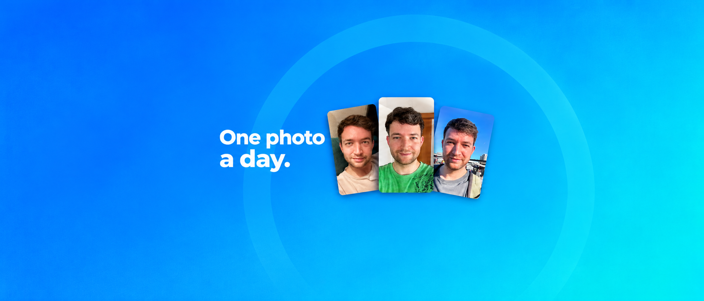
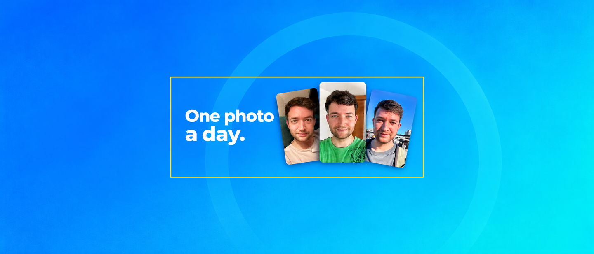
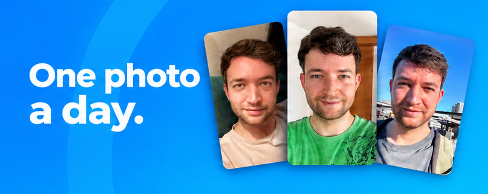
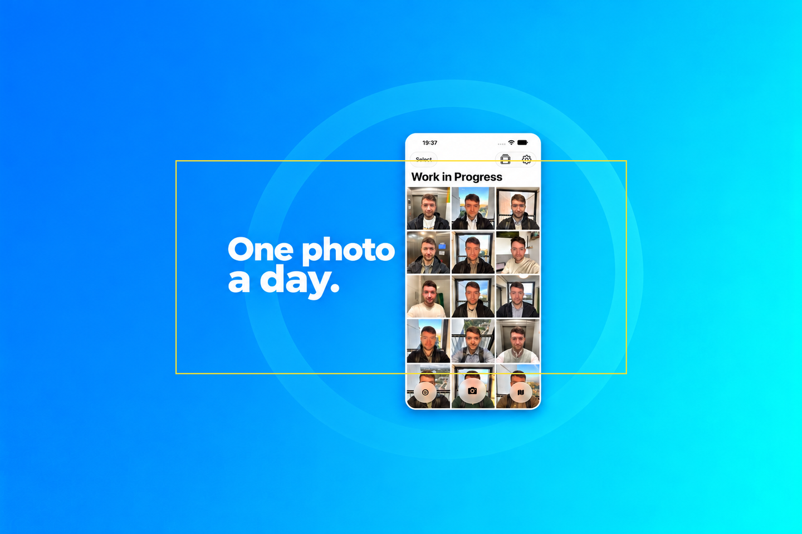
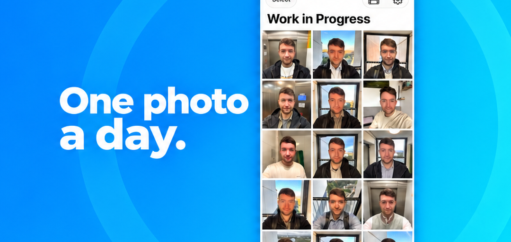

Promotional videos with changing copy and the original intro footage, plus matching still artwork. The yellow outlines in review images mark the art safe areas measured from Apple's templates.
Download both upload files · Preparation notes · Imagegen prompts
17 seconds · 886 × 1920 · 30 fps · silent · changing promotional copy
Download portrait MP4 · Poster · Video preparation notes
3840 × 1646 · RGB PNG · sRGB · no alpha



1920 × 1280 · RGB PNG · sRGB · no alpha


Still artwork was composed with imagegen and uses generated composites. The new promotional videos combine custom graphics and type with the original intro footage directly. Final header and search placement can be inspected in App Store Connect's Preview control.